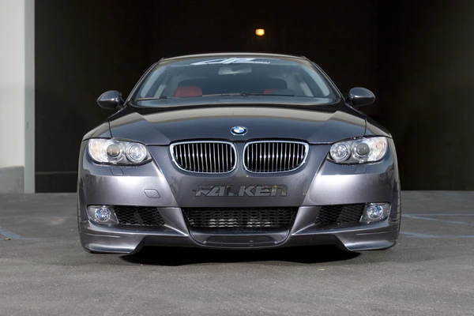
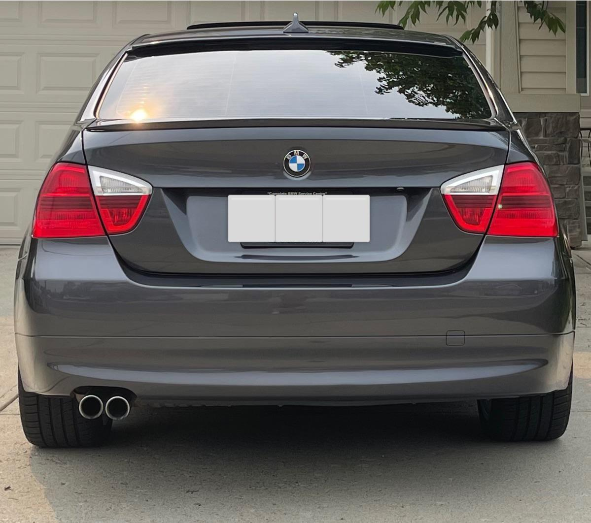
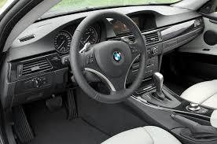

BMW E9x
The fifth-generation 3 Series (2005 - 2013)



Car Specifications
- Engine Options: 2.0L Inline-4, 3.0L Inline-6, 4.0L V8 (M3)
- Power: 143 - 420 hp
- Torque: 200 - 400 Nm
- Transmission: 6-speed manual, 6-speed automatic, 7-speed DCT (M3)
- Top Speed: 250 km/h (155 mph)
- 0-100 km/h: 4.8 seconds (M3)
- Fuel Economy: 5.4 - 12.4 L/100 km (43 - 19 mpg)
- Production Years: 2005 - 2013
- Body Style: 2-door Coupe, 4-door Sedan, Convertible, Touring (Wagon)
- Drive Type: Rear-Wheel Drive, All-Wheel Drive (xDrive models)
- Weight: 1,450 - 1,730 kg
About the BMW E9x
The BMW E9x generation introduced significant advancements in technology and performance for the 3 Series lineup. Known for its refined design, robust engineering, and the exhilarating M3 variant, the E9x remains a benchmark in the luxury sports sedan market.
It was available in a variety of trims and configurations, offering options for both the casual driver and the performance enthusiast.
Image Gallery


Key Features
- Performance: Powerful engine lineup, including the high-revving V8 in the M3.
- Design: Modern aesthetics with aggressive styling for the M models.
- Technology: Features like iDrive, adaptive suspension, and advanced safety systems.
Technical Information
The BMW E9x series offered a range of engines and technical innovations:
Engine Codes and Iterations
- N52: 3.0L Inline-6, naturally aspirated, used in 325i, 330i.
- N54: 3.0L Inline-6, twin-turbo, used in 335i.
- S65: 4.0L V8, up to 420 hp, used in the M3.
Conclusion
The BMW E9x series set a new standard for luxury and performance in its class. Whether it's the everyday practicality of the sedan or the thrilling dynamics of the M3, the E9x continues to be a favorite among enthusiasts and collectors.